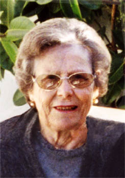

Hipólito Gómez Borreguero & Ana García Cantarero
Hipólito Gómez Borreguero & Ana García Cantarero  Hipólito Gómez Borreguero & Ana García Cantarero
Hipólito Gómez Borreguero & Ana García Cantarero  Hipólito Gómez Borreguero
Hipólito Gómez Borreguero Ana García Cantarero
Ana García Cantarero
This page is within a frameset. View the entire genealogy report of family Hipólito Gómez Borreguero & Ana García Cantarero, or surname index or report summary.
Introduction About Genealogy.
© 2006 GenoPro Inc. All Rights Reserved.